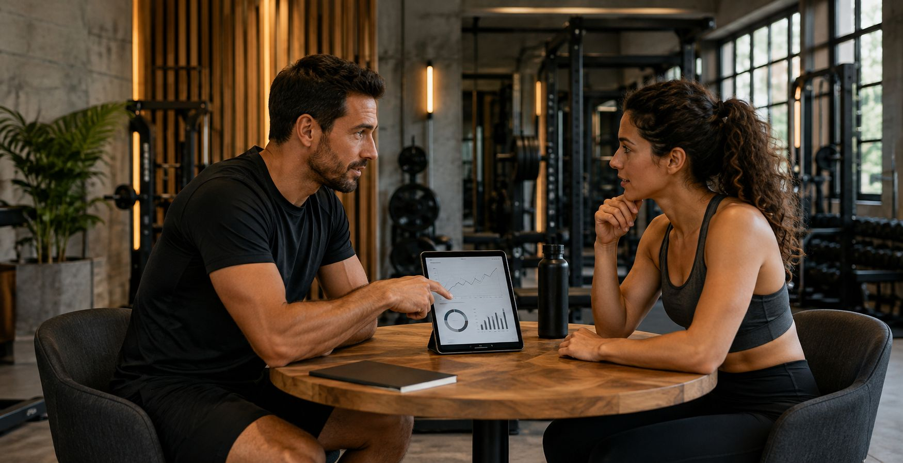
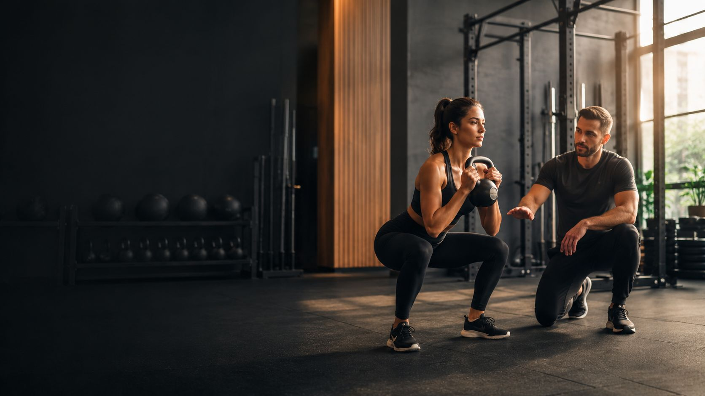
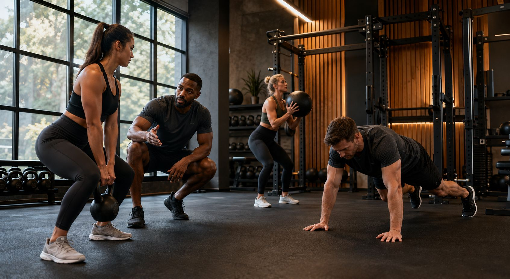
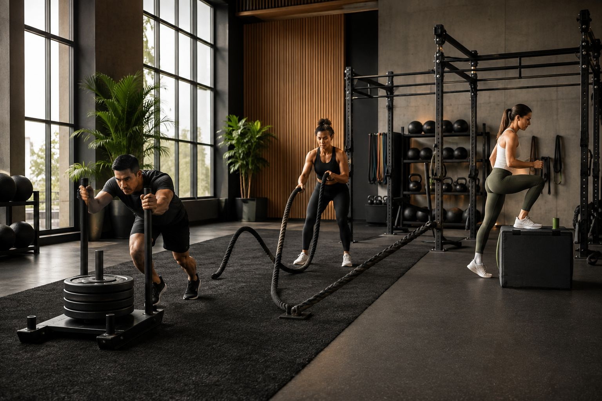
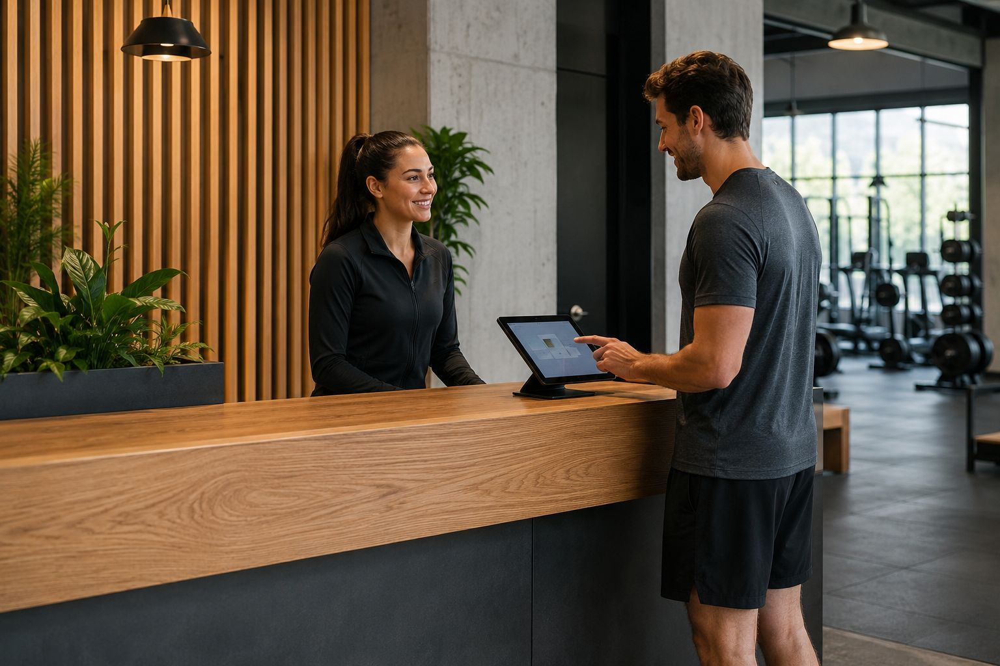

Persoonlijke richting
We vertalen ambitie naar een helder traject met ruimte voor echte coaching en praktische opvolging.

Over ons
Pulse Performance Studio combineert persoonlijke coaching, slimme programmering en een premium trainingomgeving voor mensen die bewust en consistent willen trainen.
Studioverhaal
We geloven in een aanpak die niet schreeuwerig is, maar wel scherp. De studio is ingericht voor leden die waarde hechten aan structuur, begeleiding en een omgeving waar elke trainingssessie doelgericht voelt.
Van eerste intake tot wekelijkse bijsturing: elk onderdeel van de ervaring ondersteunt progressie zonder overbodige complexiteit.

Waar we voor staan

We vertalen ambitie naar een helder traject met ruimte voor echte coaching en praktische opvolging.

De studio is ontworpen om variatie, kwaliteit en focus in elke training te ondersteunen.

Van ontvangst tot naverwerking moet alles logisch en prettig aanvoelen, zonder frictie.